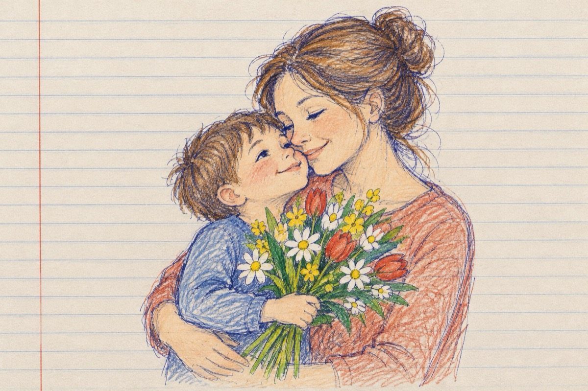

De ziua ta
Odată cu venirea primăverii
Tu mamă m-ai adus pe lume
A fost visul tău, dorința împlinirii
Ca astăzi eu să fiu în viață, să port un nume!
Odată cu sosirea primăverii
Când florile ridică din petale
Când peste tot a apărut semnul iubirii
Îți cântă toți copii lumii osanale!
Slăvită să fii în vecii vecilor
Tu făcătoarea de minuni în viață
Ce te-ai supus cu drag poruncilor
Dumnezeiești ce pân la cer te-nalță!
E ziua ta mămică și a tuturor din lume
Te strâng, mă strângi la piept
Eu te iubesc, cuvintelor a-ți spune
Îți voi păstra în uflet pe veci al tău portret
Mulți ani mămica mea, c-un braț de flori eu te aștept!
Vasile Groza